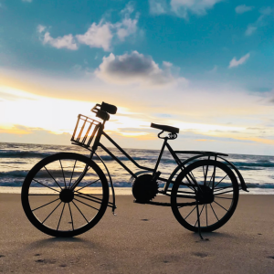

Cosas que no dejaria de hacer
Dentro del amplio abanico de actividades que considero esenciales para mi bienestar y desarrollo
personal, algunas destacan de manera especial. La primera de ellas es sumergirme en el vasto
universo de la música, donde encuentro no solo entretenimiento, sino también una fuente
inagotable
de inspiración y conexión emocional. La diversidad de géneros y artistas me permite explorar
distintas perspectivas y sumergirme en experiencias sonoras que enriquecen mi vida de maneras
inesperadas.

Mis canciones favoritas
Aunque escucho de todo y mis gustos pueden cambiar rapidamente,
actualmente tengo como favoritas
las siguientes canciones:
- I'll sleep when im dead | Set It off
- Migraine | Twenty One Pilots
- Lime | Diet Lemon
- Melt | Diet Lemon